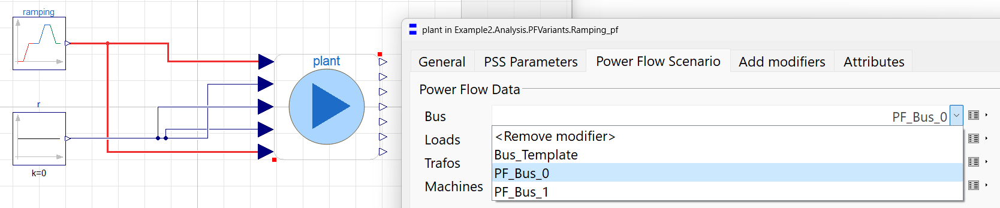

Recommended models for derivative work
Information
The models in this layer of the package (i.e. Example2.Analysis) are intended to reproduce the work in [1] and [2].
However, for derivative works the models under the package Example2.Analysis.PFVariants (and associated dependencies) are recommended, as they use OpenIPSL types which implement nominal attributes to help with the intialization process. See more information on this aspect under the information layer of Example2.PFData.
The main differences between the examples is:
- In the examples this layer of the package, Example2.Analysis, the power flow intial guess data is provided through the records in Example2.Base.Systems.Basic.Data. To change the data, it is necessary to modify the base model in Example2.Base.Systems.Basic.sys by changing the name of the record in the text layer. This is obviously inconvenient, but also as explained above, the types are generic and do not implement those of OpenIPSL.
- In the examples within the sub-package, Example2.Analysis.PFVariants, the hierarchical replaceable records in Example2.PFData are used. The data can then be modified at the top-layer of the model by selecting from the available data sets (and/or providing new ones in Example2.PFData.Data) by clicking on the "Power Flow Scenario" tab of the "Plant" (instantiation of syspf), as the records have been propagated and configured for this purposes, as shown in the screenshot below.

It is important to note that even though the models in 1. and 2. above are identical in terms of their equations, the intialization will be different due to the use of the nominal attributes. Read more on this aspect under the information layer of Example2.PFData.
Extends from Modelica.Icons.Information (Icon for general information packages).
Automatically generated Wed Mar 13 11:47:12 2024.